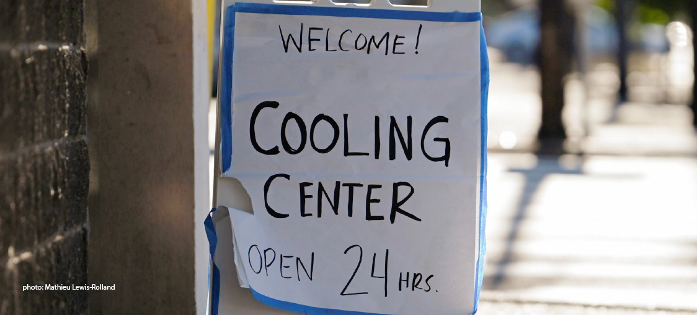
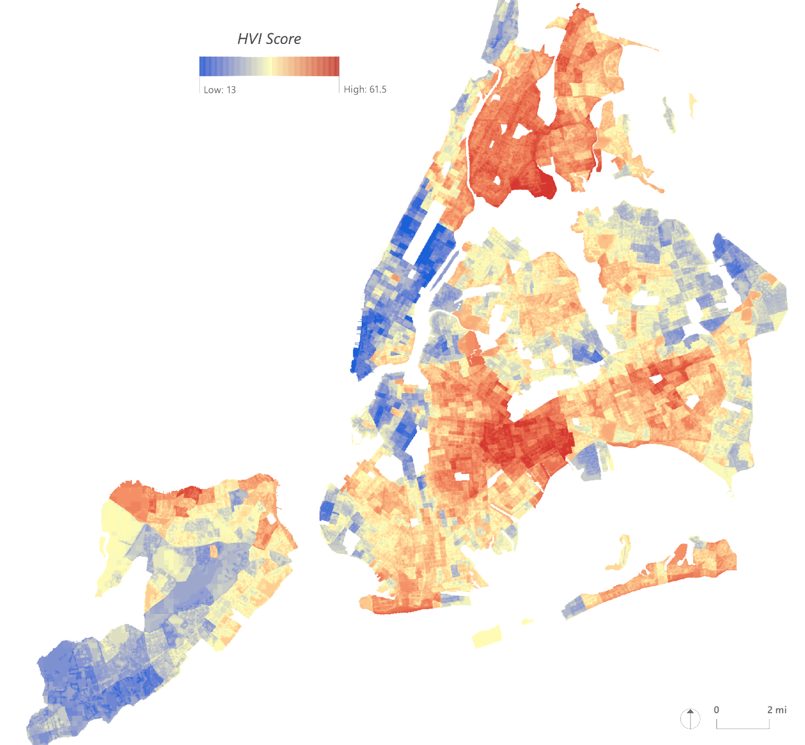

Heat Vulnerability In NYC
Introduction
In New York City, intense heatwaves from extreme weather pose a serious threat to communities throughout all five boroughs and cause more deaths each year than all other climate-related hazards combined. The NYC Panel on Climate Change predicts that the number of days per year that the city’s temperature exceeds 90°F will double by 2050. These rising temperatures exacerbate related environmental hazards, such as the urban heat island effect and poor environmental air quality, placing residents and entire neighborhoods at risk. New York City currently utilizes its own Heat Vulnerability Index ( NYC HVI) to detect neighborhood-level variations in heat vulnerability across the city. However, the tool is not refined enough to distinguish variations in the severity of heat burden faced by the city’s most vulnerable populations living in developments owned and operated by the New York City Housing Authority (NYCHA). This analysis provides a targeted HVI for specific use by NYCHA to identify developments where residents are most vulnerable to rising local temperatures and to recommend where the agency’s resources can be most effectively allocated.
Skills Used:ArcGIS, Excel, InDesign, Illustrator, Project Management
Indicators Considered
The refined HVI for use by NYCHA combines nine indicators of heat vulnerability across five categories. In order to provide a holistic understanding of what makes a neighborhood heat vulnerable, the following five categories were integrated into the final index:
| Indicator Type | Question Answered | Indicators |
|---|---|---|
| Socioeconomic indicators | Where do people have the means to cope with extreme heat? | Median Household Income |
| Health Indicators | Where are people already struggling? | Heat Hospitalization Rate, Asthma Incidence |
| Landcover Indicators | Where does the built environment contribute to extreme heat? | Green Landcover, Street Tree Density |
| Environmental Indicators | Where is the air hottest? | Summer Daytime Temperature, Ozone Concentration |
| Relief Indicators | Where do people have access to respite and refuge on hot days? | Access to Cool It! NYC Feature, Access to Cool It! NYC Libraries |
Multi Criterion Decision Analysis (MCDA)
When all nine indicators across the five categories are combined for the final HVI score, layers are weighted to reflect the relative impact each category has on vulnerability. Because socioeconomic status provides the most ability to escape heat vulnerability, and because there is only one indicator within this category, the median income layer was weighted by four. The layers for health, landcover, and environmental indicators were each counted only once, meaning that socioeconomic status had twice the impact of each of those other categories. Finally, each of the two relief indicators were weighted by 0.5, reflecting the fact that having access to refuge outside of one’s home can help, but still leaves a person vulnerable. By weighting access to Cool It! NYC features and libraries each by 0.5, relief indicators had only half the impact of health, landcover, and environmental indicators.
Final Scores
After performing MCDA with the nine heat vulnerability indicators, raster cells of 20x20 feet are assigned total vulnerability scores across the five boroughs. Scores are then averaged and aggregated by census tract to identify which tracts are most vulnerable and if clusters of vulnerable tracts exist. Visually, concentrations of highly heat vulnerable census tracts are apparent in two regions: 1. Upper Manhattan / Bronx, 2. Northeast Brooklyn / Queens The Getis Ord Gi* test of local clustering using a fixed-band distance conceptualization of spatial relationships confirms that the two regions of heat vulnerability were clustered and spatially statistically significant to the 90% confidence interval.
Project completed with Calvin Harrison and Morgan Reuther, for Leah Meisterlin's Fall 2021 Geographic Information Systems (GIS) course.
To view full report, see here.
Thumbnail Credit: Drew Angerer / Getty Images